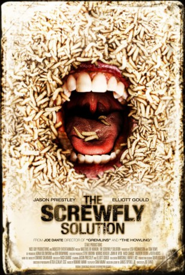

#8905 The Masters of Horror S02E07 - Screwfly Solution
 
 IMDB-Wertung: 6.4 / 10
IMDB-Wertung: 6.4 / 10  Metascore: 0
Metascore: 0 
Es beginnt mit einer grausamen Welle von Morden auf der ganzen Welt. Die Sexualbedürfnisse der Männer wandeln sich plötzlich in brutale Wut gegen die Frauen. Zwei Wissenschaftler (Jason Priestley und Elliott Gould) wagen einen verzweifelten Wettlauf gegen die Zeit, um herauszufinden, wie und warum der Krieg zwischen den Geschlechtern ausgeartet ist. Ist es ein geheimnisvoller Virus, der jeden Mann zu einem potenziellen Frauenkiller macht? Drohen die Frauen auszusterben?
Jahr: 2006
Dauer: 56 Minuten
FSK: 18
Land: Kanada Studio: PremiereTonspuren: DTS - ,
Untertitel:
Auflösung: 1080p (1920x1080) Größe: 5171 MB
Genre: Horror
Regisseur: Joe Dante
Drehbuch: Mick Garris
Soundtrack: Hummie Mann
Darsteller:
Datei: X:\FSK18-Collections\Masters of Horror\Masters of Horror S02E07 - Screwfly Solution, The (2006, FSK18, 1920x1080).mkv seit 04.05.2018
Festplatte: FSK18
 Es gibt insgesamt 30 Filme in der Gruppe 'FSK18-Collections\Masters of Horror'
Es gibt insgesamt 30 Filme in der Gruppe 'FSK18-Collections\Masters of Horror'